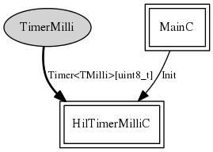

Components should never wire to this component. This is the underlying configuration of virtualized millisecond timers. It auto-wires wires the timer implementation (TimerC) to the boot sequence and exports the various Timer interfaces.
